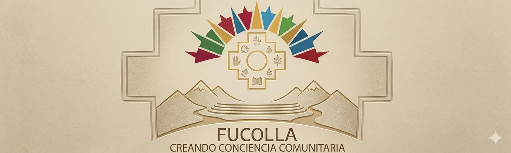
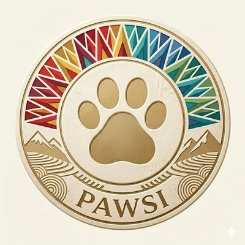

Misión
Mejorar la calidad de vida de las personas y animales, mediante programas de salud, prevención y educación comunitaria.
Nacimos en La Caldera · Trabajamos en toda la provincia de Salta
Fundando conciencia comunitaria
Salud, prevención y bienestar para comunidades más fuertes
Somos una fundación sin fines de lucro dedicada a promover la salud integral, el bienestar animal y el desarrollo comunitario en Salta. Trabajamos desde la prevención, la educación y la acción concreta, llevando servicios esenciales a quienes más lo necesitan.
FuCoLla es una fundación sin fines de lucro dedicada a promover la salud integral, el bienestar animal y el desarrollo comunitario en Salta. Trabajamos desde la prevención, la educación y la acción concreta, llevando servicios esenciales a quienes más lo necesitan.
Nacimos en La Caldera, donde tenemos nuestra sede. Trabajamos con Pueblos Originarios y con la comunidad en general de toda la provincia de Salta, con un equipo coordinador y un cuerpo de voluntarias y voluntarios en territorio. Nuestro estatuto, además, nos compromete con la promoción de los derechos y la cultura de los Pueblos Originarios de Salta y del NOA.
Mejorar la calidad de vida de las personas y animales, mediante programas de salud, prevención y educación comunitaria.
Ser referentes en salud integral y bienestar comunitario, generando un impacto positivo y sostenible en la sociedad.
| Denominación | Fundación Comunitaria Llareta (FuCoLla) |
|---|---|
| Tipo de entidad | Fundación · Benéfica |
| Personería jurídica | Otorgada por Resolución N° 707 del 03/06/2022 de la Subsecretaría de Inspección General de Personas Jurídicas (Ministerio de Gobierno, Derechos Humanos y Trabajo de la Provincia de Salta) |
| Legajo | N° 2231 |
| Ámbito de actuación | Toda la provincia de Salta (nacimos en La Caldera) |
| Sede social | calle Los Crisantemos, Medidor 110, Barrio Jardín, La Caldera, Provincia de Salta |
| CUIT | 30-71837007-4 |

Trabajamos junto a profesionales, voluntarios, organizaciones y la comunidad para generar cambios reales y sostenibles.
Prevención, diagnóstico y control
Castraciones y concientización
En La Caldera, colaboramos con las campañas de castración organizadas por la Municipalidad de La Caldera en convenio con UCASAL. Nuestra acción principal hoy es Pawsi AI. Ver Campañas.
Deporte, educación y contención
Promovemos y defendemos los derechos humanos de los Pueblos Originarios de Salta y del NOA, y acompañamos la preservación de sus territorios ancestrales, su identidad y su cultura, tal como establece nuestro objeto social.
Con FuCoLla Tech tendemos puentes tecnológicos hacia comunidades rurales y originarias: acceso a herramientas digitales, formación gratuita y una red de apoyo, pensado para celulares básicos y conexiones lentas.
Según el Artículo Segundo de nuestro estatuto, FuCoLla tiene por objeto:
«La Fundación Comunitaria Llareta (FuCoLla), tendrá por objeto: 1) Permitir a las familias de Pueblos Originarios de Salta, acercar los servicios socio sanitarios primarios a fin de mantener o recuperar el estado pleno de salud de sus miembros; 2) Ofrecer contención psico socio afectiva y formación en valores, brindando las herramientas necesarias para promocionar el desarrollo humano; 3) Promocionar los derechos de nuestros Pueblos Originarios sitos en el territorio de la provincia de Salta, y Región NOA, promulgando y defendiendo los derechos humanos de sus comunidades y miembros; 4) Velar por la determinación de los pueblos de preservar, desarrollar y transmitir a futuras generaciones, sus territorios ancestrales y su identidad étnica como base de su existencia continuada como pueblo, de acuerdo con sus propios patrones culturales, sus instituciones sociales y sus sistemas legales; 5) Trabajar en el desarrollo de los aspectos sociales, culturales, económicos, educativos, sanitarios, y todo derecho humano protegido o garantizado en tratados internacionales, a fin de elevar el nivel de vida de las comunidades originarias; 6) Concientizar a los distintos sectores de la comunidad la importancia del respeto a los derechos y la revalorización de los principios y cultura de los pueblos originarios; y 7) Programar actividades de distinta índole con la intención de generar los recursos económico y humanos para tal fin.»

Plataforma de Gestión Inteligente de Salud Pública Animal para municipios. Una iniciativa de FuCoLla en alianza con municipios de Salta, que ordena los datos de salud animal para tomar mejores decisiones públicas, con transparencia.
Hoy en Salta no existe un registro único de salud animal: los datos están dispersos en planillas de papel, sin trazabilidad, y no hay forma de verificar castraciones, vacunas ni atención clínica. Pawsi AI propone:
Pawsi AI fue desarrollado en la Hackathon Puna Tech 2026 (Salta, 28 al 30 de mayo de 2026) y utiliza datos reales de la campaña de castración de La Caldera (organizada por la Municipalidad de La Caldera en convenio con UCASAL, con la colaboración de FuCoLla), sistematizados por FuCoLla.
28 de mayo de 2026 · La Caldera, Salta
Organizada por la Municipalidad de La Caldera en convenio con UCASAL, con la colaboración de FuCoLla.
Las intervenciones las realizaron estudiantes del último año de la carrera [COMPLETAR: confirmar nombre de la carrera; la fuente dice «Medicina»], en modalidad de prácticas profesionales.
Muestra de la campaña de mayo 2026
El rol de FuCoLla: colaboramos y participamos en la jornada, sistematizamos los datos de la campaña y, a través de Pawsi AI, trabajamos para brindar información accesible a la comunidad, además de difundir y promover la tenencia responsable de mascotas.
Hay más campañas realizadas que publicaremos próximamente.
Fuente: datos de la campaña sistematizados por FuCoLla.
Publicaciones de la Municipalidad de La Caldera sobre las campañas de castración: [COMPLETAR: enlaces a las publicaciones de la Municipalidad de La Caldera en redes sobre campañas de castración con FuCoLla]
Inspirados en el Qhapaq Ñan, el gran camino andino que conectaba pueblos y culturas, construimos un puente digital para acercar oportunidades tecnológicas a comunidades rurales y originarias. Porque la tecnología no debe ser un privilegio: es un derecho.
Conocé el proyecto FuCoLla Tech · [COMPLETAR: enlace al sitio publicado de FuCoLla Tech]
[COMPLETAR: próximas jornadas (fecha, lugar, tipo de campaña, cómo anotarse)]
[COMPLETAR: campañas anteriores de salud integral y derechos humanos, con fotos autorizadas]
Hay muchas formas de sumarte: con un aporte, con tu tiempo, compartiendo lo que hacemos o desde tu empresa o institución.
Tu aporte hace posible cada acción.
Transferencia bancaria · Banco Galicia
[COMPLETAR: enlace del botón «Doná online» (p. ej., Mercado Pago)]
[COMPLETAR: indicar si las donaciones son deducibles del Impuesto a las Ganancias]
Tu aporte hace posible cada acción. Muy pronto vas a poder donar desde aquí; mientras tanto, escribinos.
Como voluntario o profesional. Nuestro trabajo en territorio lo llevan adelante voluntarias, voluntarios y profesionales que ponen su tiempo y sus saberes en salud, bienestar animal y desarrollo comunitario.
Ver cómo sumarme[COMPLETAR: link al formulario de inscripción de voluntariado]
Nuestras campañas y actividades. Compartir lo que hacemos ayuda a que la información llegue a más familias.
Seguinos en InstagramSi representás una empresa o institución. Podemos firmar convenios de cooperación con entidades públicas o privadas, nacionales o extranjeras. Buscamos sumar a:
Hoy colaboramos con la Municipalidad de La Caldera en las campañas de castración que organiza en convenio con UCASAL.
Sumar esfuerzos multiplica resultados
Proponer una alianza[COMPLETAR: otras instituciones aliadas, con su autorización y logos]
Elegí cómo querés participar y escribinos. Te abrimos un mensaje listo para enviar por WhatsApp o por correo.
Das una mano en jornadas, campañas y difusión, según tu disponibilidad.
Aportás tu oficio o profesión: salud, veterinaria, derecho, sistemas, entre otras.
Asumís una tarea fija y regular (por ejemplo, un día por semana o a cargo de un área), con tu propio manual de procesos.
Creemos que una organización que administra recursos de terceros debe rendir cuentas de manera clara y verificable. Por eso trabajamos para documentar nuestros procesos, medir resultados y publicar la información institucional.
| Estado | Entidad vigente y con balances 2022–2024 aprobados |
|---|---|
| Personería jurídica | Resolución N° 707 del 03/06/2022 · Subsecretaría de Inspección General de Personas Jurídicas, Ministerio de Gobierno, Derechos Humanos y Trabajo de la Provincia de Salta |
| Expediente | N° 54-68260/2022-0 |
| Legajo | N° 2231 |
| Tipo de entidad | Fundación · Benéfica |
| Certificado de personería | Entregado en Salta el 22/06/2022 |
| Certificado de vigencia | Emitido el 08/04/2025 · Protocolo N° 131 |
| Estatuto | [COMPLETAR: enlace al estatuto en PDF] |
| Domicilio | En jurisdicción de la Provincia de Salta · Sede social: calle Los Crisantemos, Medidor 110, Barrio Jardín, La Caldera, Provincia de Salta |
| CUIT | 30-71837007-4 |
| Ejercicios y balances | Ejercicios 2022, 2023 y 2024 tratados y aprobados por Acta del 12/02/2025 · [COMPLETAR: memorias y balances anuales en PDF] |
| Consejo de Administración | Registrado por Acta de Reunión Especial del 24/03/2025 · Mandatos de 4 años · [COMPLETAR: autoridades vigentes, si se desean publicar] |
Escribinos para sumarte, proponer una alianza o conocer más sobre nuestro trabajo. Salta, Argentina.
Construyamos juntos un futuro más saludable, solidario y consciente.